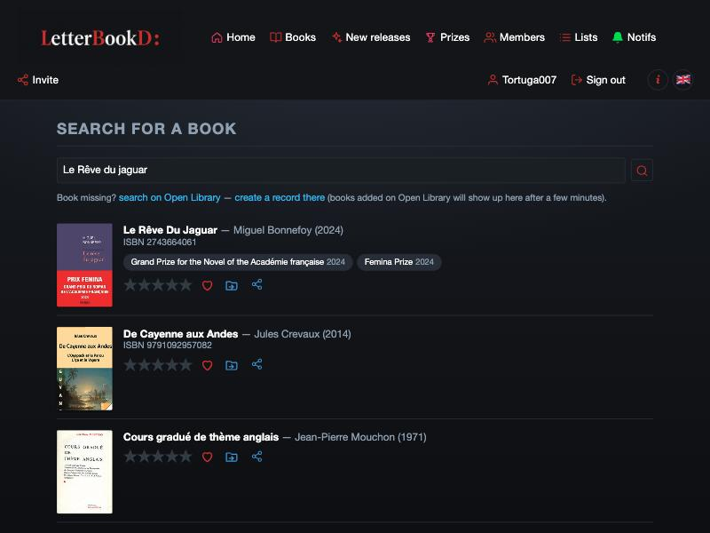

Books — Search
Why it exists: Find a book in your club's shared catalogue. If the book is not there, you can propose it via Open Library: it will appear in the catalogue a few minutes later.

Walkthrough
Type the start of a title, an author's name or an ISBN in the search bar, then press Enter (or click the magnifier). For example, 'Le Rêve du jaguar' returns the book page for the 2024 Prix Femina and Grand Prix du roman de l'Académie française winner.
If the book is missing, follow the 'search on Open Library' link, then 'create a record there'. Open Library pushes the record into letterbookd within a few minutes.
Action chains
Each row describes a trigger in the UI, the modal or form it opens, and the resulting effect.
| Trigger | Modal / Fields | Effect |
|---|---|---|
| Search bar | One text field (title, author, or ISBN). Submit with Enter or the magnifier. | Reloads the page with matching results. The URL carries a '?q=…' parameter, so you can share the search. |
| 'search on Open Library' / 'create a record there' link | Open Library form (outside letterbookd). | Creates a record on Open Library; letterbookd picks it up within minutes. Refreshing the search will show the new book. |
| Heart icon (result row) | — | Adds or removes the book from your 'Favorites' system list. |
| Folder icon (result row) | Opens the 'Add to a list' modal (see below). | Adds the book to the chosen list, or to a new list created on the spot. |
| Share / triangle icon (result row) | Opens the 'Suggest this book' modal. | Sends a private suggestion to a member of your club, with an optional message (280 characters max). |
| Grey stars (result row) | Clicking the stars opens the full rating form on the book page. | Redirects to the book page, where you can give your rating. |